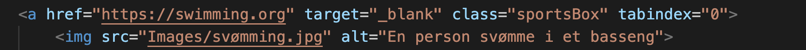

Vi tenkte på funskjonalitet i henhold til side strukturen.
En del av det var å gjore det mulig å nå alle sider fra alle andre sider
Vi løste dette med en navigasjons meny som er på toppen og bunnen av hver side
All teksten og linkene må være lagt ut på en logisk måte slik at man kann nå det med keyboard eller skjerm lesere.
Dette innebærer også at man tagger html elementer med riktig klasse og scope
Alle bildene har alternativ tekst. Dette gjør det lettere å forstå siden for de med nestatt syns evner.
Ved å ha alternativ tekster på bilder så kann mennesker lese disse teksene med en skjerm leser og forstå innholde.
Videre så bruker vi scope = row for a kjennetegne et nytt rad i tabell elementer:
Ved a legge in scope = row for hvert nye rad så kan man skille mellom hvert nye rad.
En av de største utfordringene med hensyn til universiell utforming var akkuratt dette med brukervennelighet
Etter å ha lagt til en god del CSS så matte vi endre den orginale planlagte farge kombinasjonen da den ikke hadd stor nok kontrast mellom de ulike fargene.
I tilegg til fargesjekk så brukte vi Wave plugin på siden og sjekket siden på mobil.
Dette gjør at vi får oversikt på de forskjellige limitasjonene som siden stiller med og veiledning på hvordan vi kan gjøre siden mer Brukervennlig.